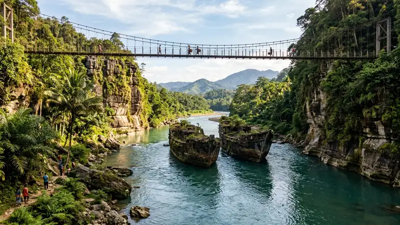

Spot foto Batu Kapal terbaik berada di formasi batu raksasa menyerupai kapal, jembatan gantung di atas Sungai Opak, dan tebing sedimen yang mengapit aliran sungai berwarna biru jernih.
- Formasi batu besar yang menyerupai kapal menjadi latar foto paling ikonik di kawasan ini
- Jembatan gantung menawarkan sudut pengambilan gambar dari ketinggian dengan latar sungai
- Tebing sedimen purba di kedua sisi sungai memberi kesan dramatis pada hasil foto
- Kawasan ini juga populer sebagai lokasi foto prewedding dengan biaya sewa tempat tersendiri
- Waktu pagi hari dan musim hujan memberikan pencahayaan serta warna air terbaik untuk fotografi
Apa Saja Titik Foto Favorit di Spot Foto Batu Kapal?
Titik foto favorit di kawasan Batu Kapal berpusat pada dua bongkahan batu besar dengan tekstur ukiran alami yang menyerupai lambung kapal. Formasi batu inilah yang menjadi identitas visual utama sekaligus latar belakang foto yang paling banyak diburu wisatawan maupun fotografer.
Selain formasi batu utama, jembatan gantung yang membentang di atas Sungai Opak menjadi spot favorit kedua. Posisi jembatan yang lebih tinggi dari permukaan sungai memungkinkan pengambilan gambar dengan latar belakang aliran sungai dan tebing di kedua sisinya secara lebih luas.
Tebing-tebing batu sedimen purba yang mengapit sungai juga kerap dijadikan latar belakang foto karena teksturnya yang unik dan berbeda dari formasi batu di kebanyakan destinasi sungai lain. Kombinasi warna air biru jernih, bebatuan besar, dan dinding tebing alami membuat kawasan ini terasa seperti lanskap yang jarang ditemukan di destinasi wisata sungai konvensional.
Bagaimana Tips Memotret di Area Bebatuan Sungai Batu Kapal?
Memotret di area bebatuan sungai memerlukan sejumlah persiapan teknis maupun keselamatan agar hasil foto maksimal tanpa mengorbankan kenyamanan.
- Datang pada pagi hari untuk mendapatkan pencahayaan alami yang lebih lembut dan menghindari bayangan keras di siang hari
- Gunakan sudut pengambilan gambar dari jembatan gantung untuk mendapatkan komposisi yang mencakup keseluruhan formasi batu dan sungai
- Perhatikan pijakan saat berpindah posisi di area bebatuan yang basah dan licin
- Manfaatkan pantulan warna biru air sungai sebagai elemen komposisi tambahan, terutama pada musim hujan
- Bawa lensa dengan rentang fokal yang fleksibel untuk menangkap detail formasi batu maupun pemandangan luas kawasan
Bagi fotografer maupun konten kreator, penting juga memperhatikan keselamatan peralatan kamera mengingat sebagian area berdekatan langsung dengan aliran sungai.
Apakah Batu Kapal Cocok untuk Foto Prewedding?
Kawasan Batu Kapal cukup populer sebagai lokasi foto prewedding karena menawarkan latar alam terbuka berupa sungai, bebatuan besar, dan tebing purba yang jarang ditemukan di studio maupun taman kota konvensional.
Bagi pasangan yang berencana melakukan sesi foto prewedding di lokasi ini, umumnya diperlukan koordinasi terlebih dahulu dengan pengelola setempat, termasuk menginformasikan jadwal kunjungan dan menyiapkan biaya sewa tempat yang terpisah dari kontribusi tiket masuk sukarela pengunjung umum. Biaya ini dapat bervariasi tergantung kebijakan pengelola, sehingga sebaiknya dikonfirmasi langsung sebelum hari pemotretan.
Waktu pagi hari umumnya menjadi pilihan favorit untuk sesi foto prewedding karena kondisi cahaya lebih merata dan kawasan belum terlalu ramai oleh pengunjung umum.
Apa Peralatan yang Perlu Dibawa untuk Sesi Foto di Batu Kapal?
Mengingat medan di kawasan ini didominasi bebatuan dan area basah, ada beberapa perlengkapan yang sebaiknya dipersiapkan sebelum melakukan sesi foto.
- Alas kaki anti-selip untuk menjaga keseimbangan saat berpindah posisi di atas batu
- Kain pelindung atau tas tahan air untuk melindungi peralatan kamera dari percikan air sungai
- Baju ganti, khususnya bagi model atau pengunjung yang berencana berinteraksi langsung dengan air
- Reflektor portabel kecil untuk membantu pencahayaan tambahan saat kondisi mendung
- Power bank atau baterai cadangan mengingat akses listrik di kawasan ini terbatas
FAQ
Apa spot foto paling ikonik di Batu Kapal?
Spot foto paling ikonik adalah formasi dua batu besar yang menyerupai kapal di tengah aliran Sungai Opak.
Kapan waktu terbaik untuk memotret di Batu Kapal?
Waktu terbaik adalah pagi hari pada musim hujan, sekitar November hingga Februari, saat pencahayaan lembut dan air sungai tampak lebih biru.
Apakah ada biaya tambahan untuk sesi foto prewedding di Batu Kapal?
Ya, sesi foto prewedding umumnya memerlukan biaya sewa tempat tersendiri yang perlu dikoordinasikan langsung dengan pengelola setempat.
Arya
Siswa Skariga yang sedang belajar di Gm Academy.